Total words
6,394
+1,411 this week
THESIS WRITING LOG
A visual overview of writing progress over time.
Last updated: 2026-10-29 17:56 CET
Current totals and changes recorded during the latest week.
Total words
6,394
+1,411 this week
Total figures
17
+3 this week
Total equations
4
No change this week
Total tables
1
No change this week
Changes in equations, figures, tables, citations, and cross-references between recorded weeks.
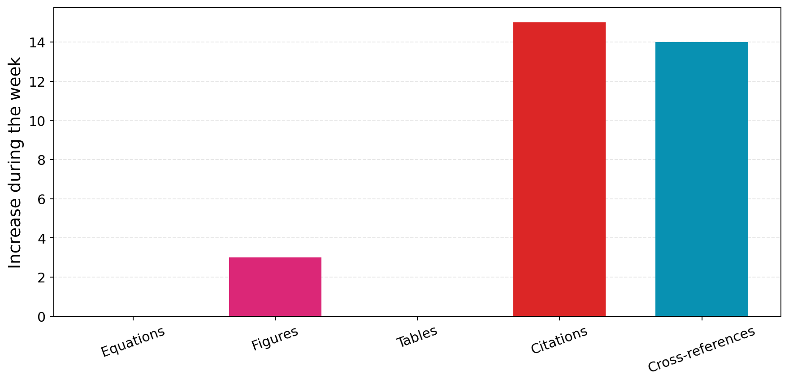
Each chart shows a separate measure of writing progress.
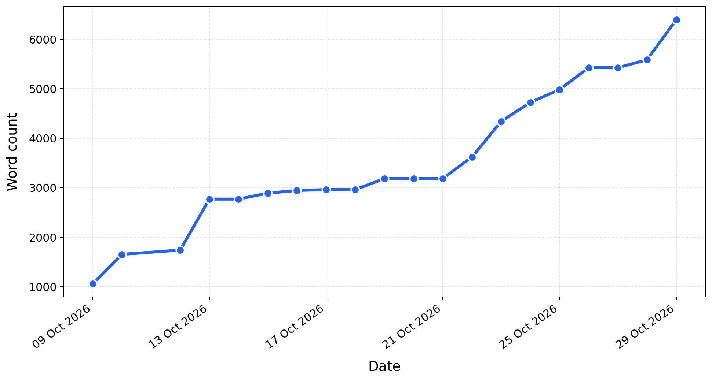
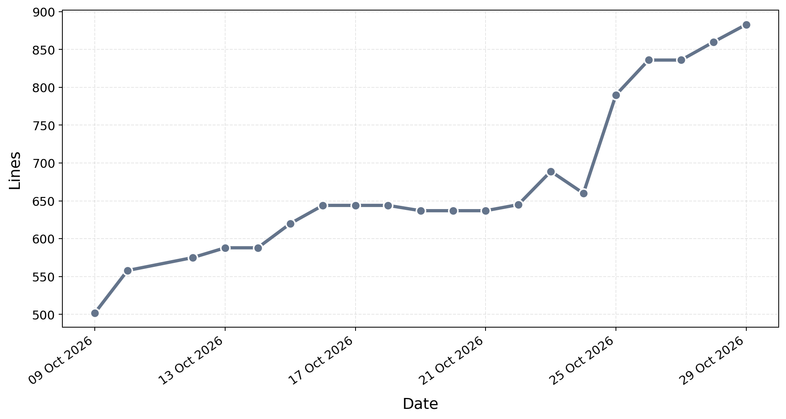
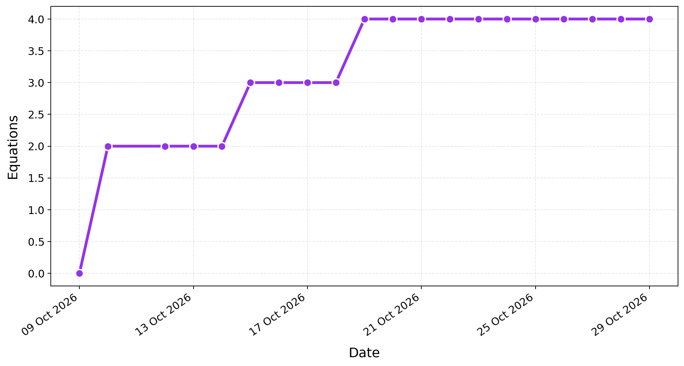
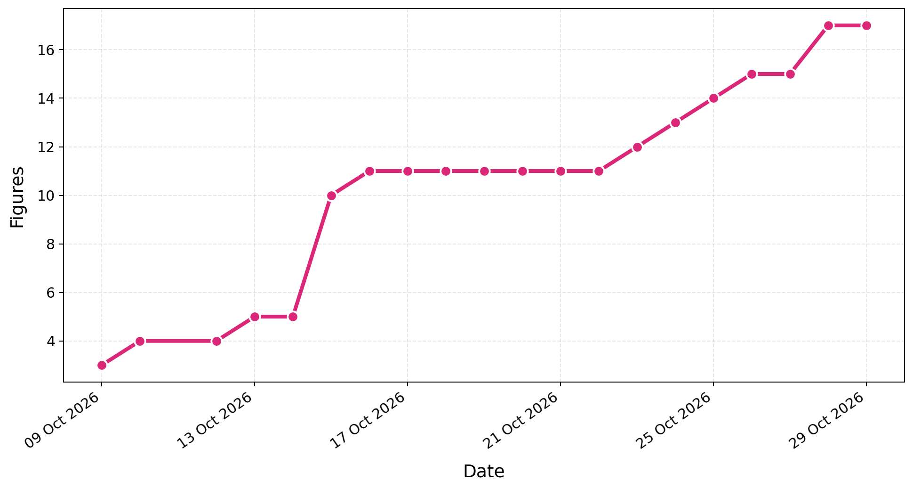
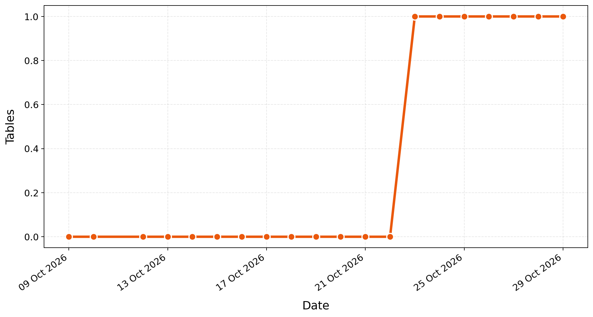
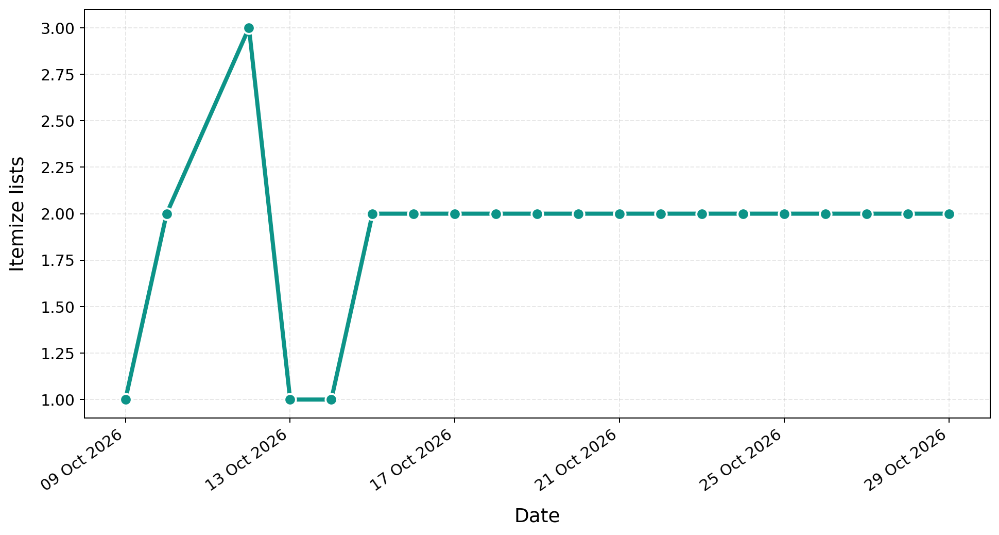
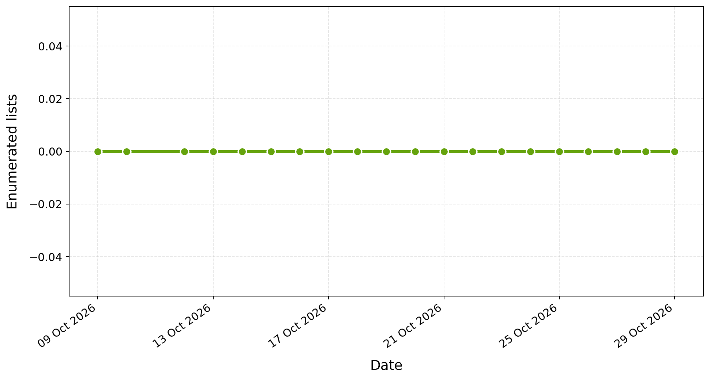
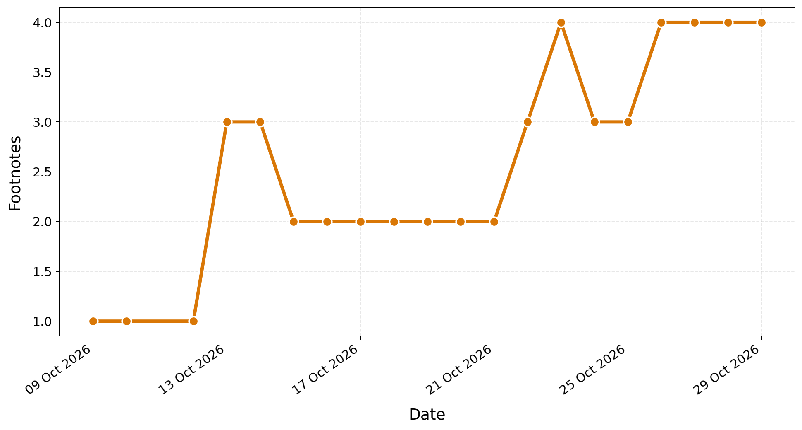
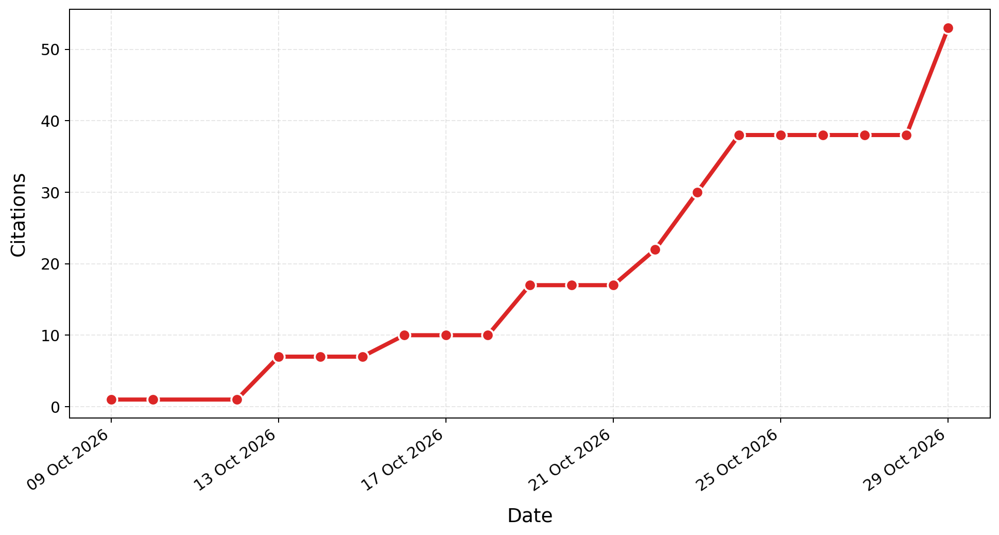
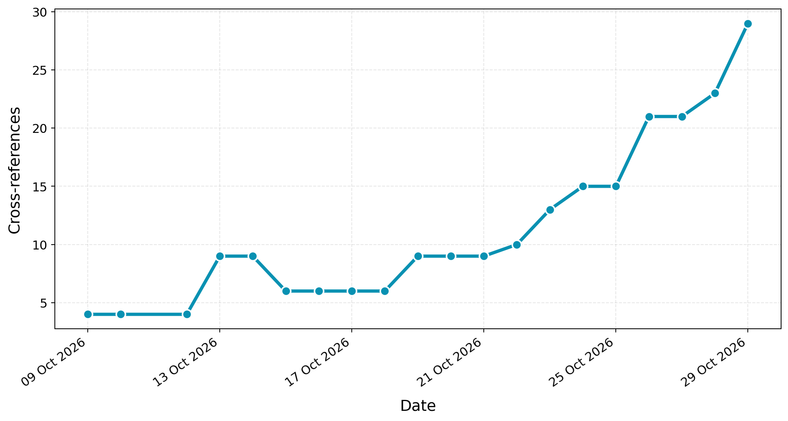
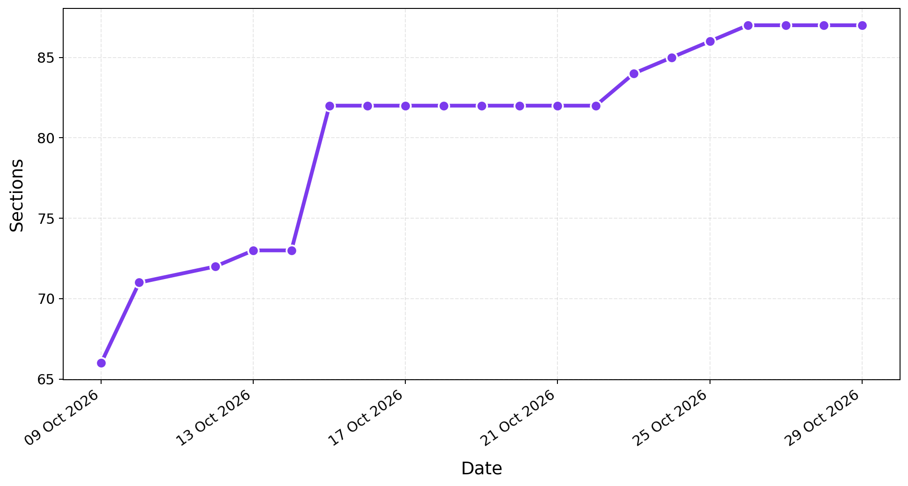
Based on word count. Weekly growth and the share of recorded word additions attributed to each weekday.
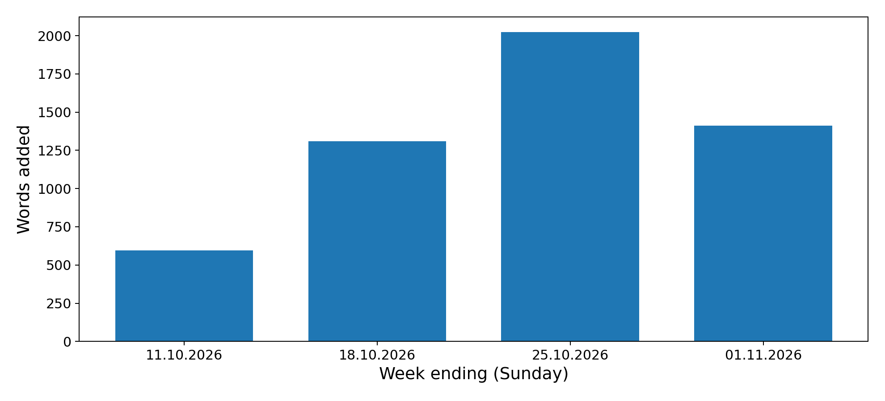
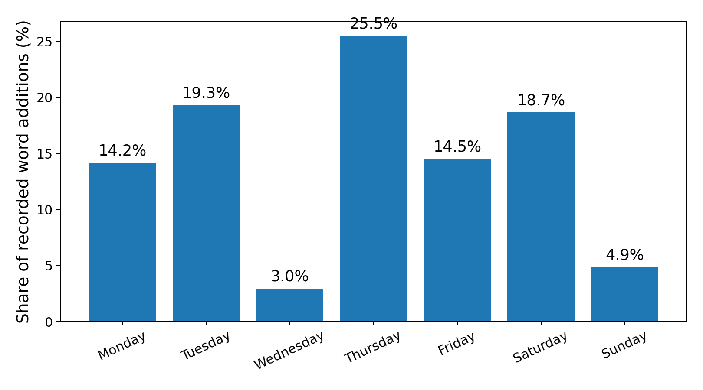
Distribution of thesis repository commits by hour of day.
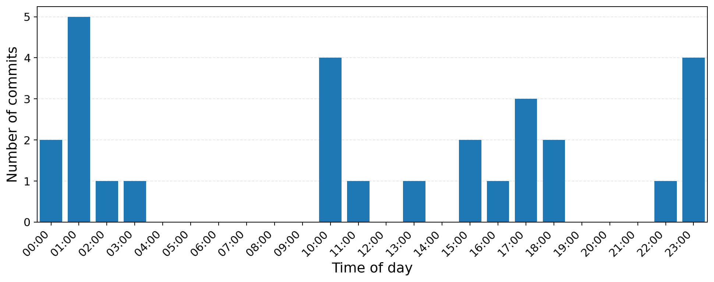